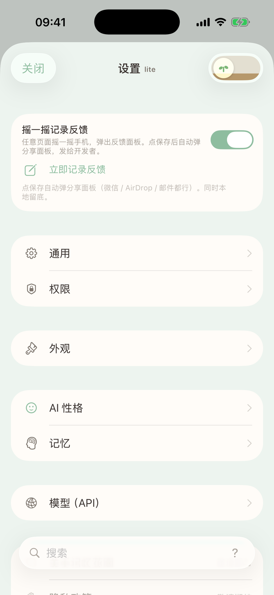
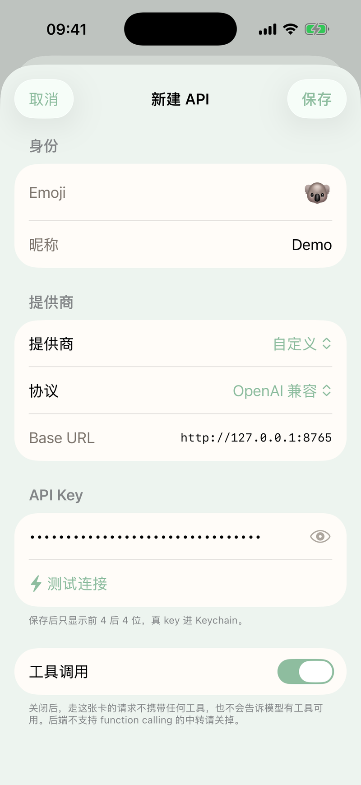
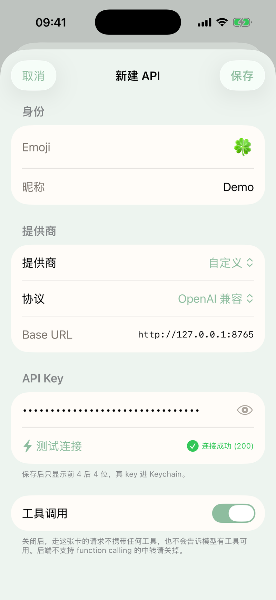
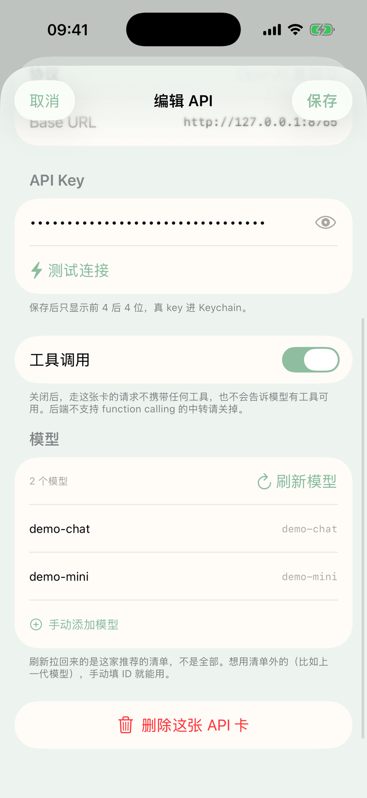
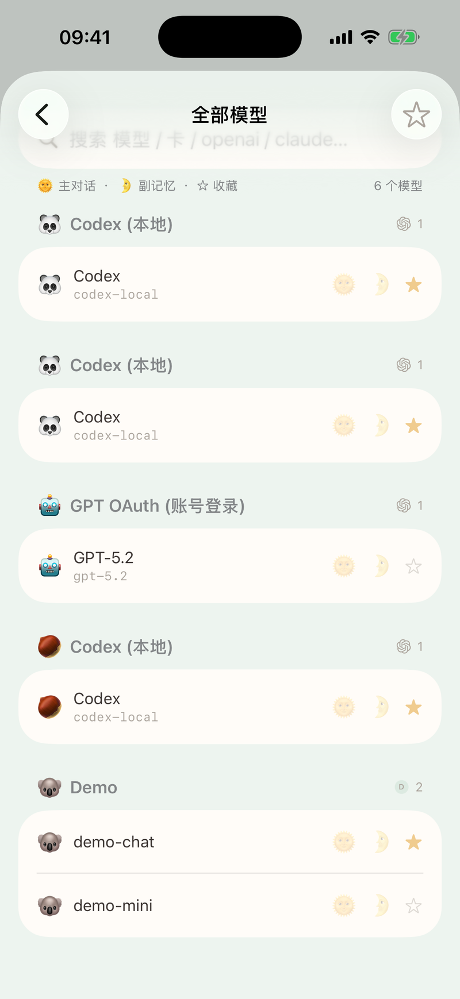
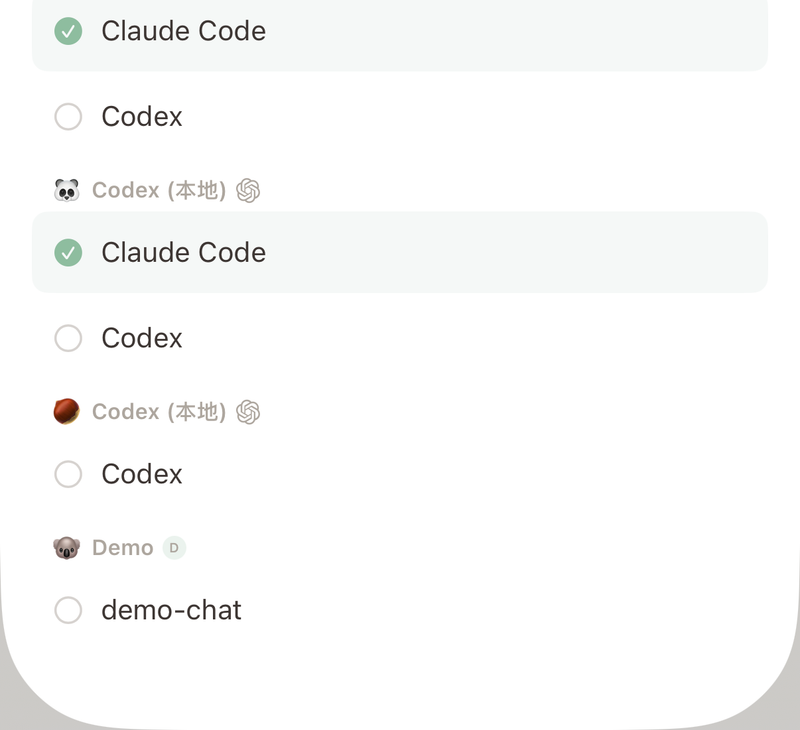
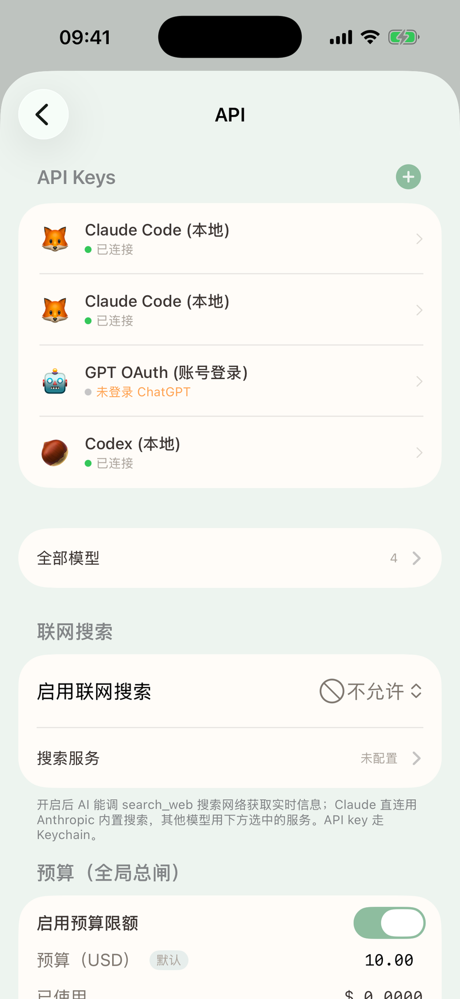
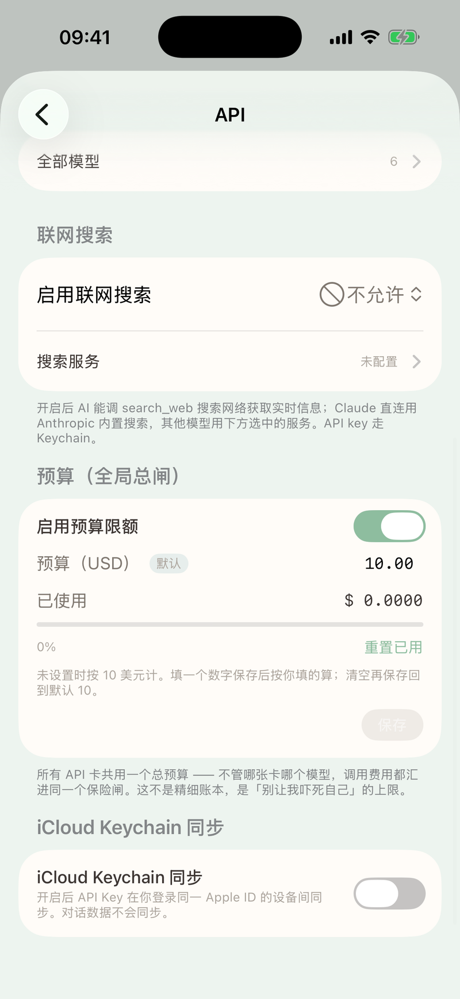
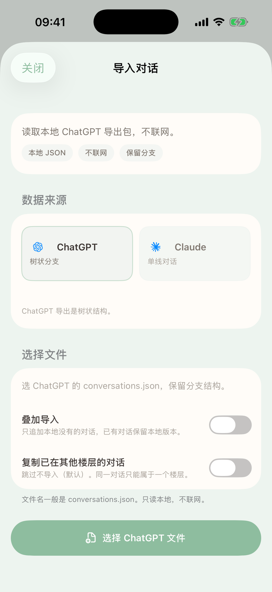

接一个模型
做完这页，AI就能用你选的模型跟你聊天了。
准备
你需要一把 API key。去模型提供商的官网申请，拿到一串以 sk- 开头的密钥。
步骤
- 打开设置。
按 ⌘,（或点侧栏底部的齿轮图标）打开设置窗口，在左侧目录点「API」。
点对话列表页底部的齿轮图标，点「API」或「模型（API）」。

- 点「API Keys」标题右侧的 + 按钮。弹出「新建 API」页。

选一个 Emoji，给这张卡起个昵称。Emoji 不能和已有的卡重复，被占用的会标「占」。
在「提供商」下拉里选你的服务商。内置 17 家预设，选好后地址自动填好。如果你的服务商不在列表里，选「自定义」，再选协议、填 Base URL。

在「API Key」栏粘贴你的 key。点旁边的眼睛键可以看明文。保存后只显示前 4 后 4 位，真 key 进 Keychain。
点「测试连接」。成功会显示「连接成功 (200)」。

点右上角「保存」。按钮短暂变成「✓」后自动关闭页面。
在卡列表里点刚才建的卡，进入「编辑 API」。在「模型」区点「刷新模型」，等它拉回这家提供商的模型列表。

- 回到 API 页，点「全部模型」。找到你要用的模型，点行尾的 ☆ 收藏。聊天页的选择器只列收藏过的模型，不收藏就看不见。

- 回到聊天页，点输入栏右侧的模型胶囊。在选择器里点你刚收藏的模型，选中即可开始聊天。

下一步
想了解 API 卡的全部选项和模型管理细节，见模型与 API 卡。
导入你的聊天记录
把 ChatGPT、Claude、Gemini、RikkaHub 或 Kelivo 的对话导入记忆花园，做完就能浏览全部聊天记录。
准备
一份 ChatGPT、Claude、Gemini、RikkaHub 或 Kelivo 的导出包。导入全程在本机完成，不联网。
步骤
- 打开导入页面。
点侧栏搜索行右侧的导入键（悬停提示「导入对话」）。
打开 设置 › 数据与备份 › 导入，点「导入对话」。看不到「数据与备份」时，走 设置 › 通用 › 楼层。点「编辑当前楼层」或「新建楼层」，再点「导入聊天记录」。保存后导入页面自动打开。对话列表为空时也可以点空状态卡上的「导入聊天记录」。
- 点「选择导出包」。
弹出系统文件选择器。zip、文件夹、单个导出文件都行，可以一次多选。不用区分来源，记忆花园会自动识别。不确定怎么导出，展开页面上的「怎么拿到导出包」。
- 选好文件，确认打开。
页面显示「正在识别」。大包要十几秒。
- 看到识别结果，点「开始导入」。
页面列出识别到的内容，按来源和类别分行。默认全部勾选，确认后点「开始导入」。
- 等待导入完成。
页面显示当前阶段和进度条，做完的阶段会划掉。大包要几分钟，别关这个页面。
- 看到结果，点「完成」。
页面按类别列出本次新增和跳过的条数。关闭后，导入的对话出现在侧栏列表里。
下一步
导入页上还有「叠加导入」和「复制已在其他楼层的对话」两个开关，这次不用开。想了解这两个开关和结果页每项的含义，见导入。每次导入会生成一条记录，需要时可以整次撤回，见导入历史与撤回。
主对话阅读
切换消息版本
消息有多个版本时，气泡下方会显示 ‹ 2 / 3 ›。点左右箭头切换版本，点中间数字打开版本列表。到了第一个或最后一个版本，相应箭头会变灰。
普通模式和气泡模式都能切换版本。你的分页器靠右，助手的靠左。
查看工具步骤
助手使用工具时，先显示一句过程总览，例如「在文件库搜了两次，读了卡片说明」。点这句话，查看每一步的动作、工具名称和完成状态。点某一步，可以继续查看参数、输出或打开完整结果。
工具还在运行时，总览显示进度；完成后可能更新为更自然的总结。总结生成失败仍可查看步骤和结果。
查看想起的记忆
助手回复下方的宫殿门廊图标旁会显示「想起来了 N 件事」，并预览一条相关记忆。点开可以查看这轮想起的记忆。
记忆列表支持反馈、修改、停用与恢复，以及跳到来源。列表显示记忆现在的内容；已删除的记忆会保留当时的快照并标记状态。
选择展开方式
进入 设置 › 外观 › 消息显示，分别设置「工具调用」和「想起来了」：
| 选项 | 点开后 |
|---|---|
| 原地展开 | 在对话里查看 |
| 弹出显示 | 在独立面板里查看 |
| 隐藏 | 不显示这一行 |
两项可以选择不同方式。隐藏工具过程不会隐藏工具生成的结果卡。
填写加密卡
密码等敏感值使用加密卡。点豆沙绿底白字的「填写」打开填写面板，填写并保存；已经填过的卡可点「修改」。
回应一条消息
长按消息，点回应图标表达赞、喜欢、庆祝等回应。已经选中的再点一次即可取消。消息旁的回应角标也能点按取消。
回应会随下次消息捎带给助手；发送前取消会撤掉捎带，发送后取消会另行告知。
报错与系统通知
报错、停止和送达异常以居中胶囊显示。回复中途出错时，已经生成的正文保留，错误提示显示在气泡外。有「重试」或「重发」按钮时，可以直接重试。
模型与 API 卡
管理你的 API 卡和模型，让记忆花园连上各家大模型。
这是什么
API 卡是记忆花园接入模型的单位。一张卡包含一把 key、一个 emoji、一个昵称、一家提供商，以及这张卡能用的模型列表。你可以建任意多张卡，同一家提供商也能建多张。
卡不绑定任何对话。所有卡在 app 层面共享，任何对话都能选任何卡里的模型。
怎么进
⌘,（或侧栏底部齿轮）› 设置窗口左侧目录「API」。
对话列表页底部齿轮 › 设置 › 「API」（pro 模式）或「模型（API）」（lite 模式）。

API 页从上到下依次是：「API Keys」卡列表、「全部模型」、「联网搜索」、「预算（全局总闸）」、「iCloud Keychain 同步」。一张卡都没有时显示「还没加 API。点右上 + 加一张」。
提供商与协议
新建卡时在「提供商」下拉里选。内置 17 家预设：
GPT OAuth (账号登录)、Anthropic、OpenAI、OpenRouter、DeepSeek、Groq、xAI、SiliconFlow、通义千问 (DashScope)、智谱 (GLM)、豆包 (Volcengine)、Google Gemini、Moonshot / Kimi、Ollama (本地)、claude-p、Claude Code (本地)、Codex (本地)。另有「自定义」。
底层协议只有四种：OpenAI 兼容、Anthropic、CC Bridge（本地 Claude Code 桥）、ChatGPT 账号登录。除 Anthropic / claude-p 走 Anthropic 协议、Claude Code / Codex 走 CC Bridge、GPT OAuth 走账号登录外，其余预设全部走 OpenAI 兼容协议。
预设只是模板。选完后协议、地址、预填模型复制进卡，卡本身独立保存。
自定义卡
选「自定义」后要填三样：协议（OpenAI 兼容或 Anthropic）、Base URL、key。已保存的卡不能再改协议。
内置预设卡
只要填 key。Base URL 只读展示。
特殊卡
GPT OAuth：app 启动自动出现在卡列表，不用手动新建。在卡详情里点「用 ChatGPT 账号登录」完成授权。
登录分三步：先在 Safari 中登录，Safari 会显示「无法连接到服务器」，复制那段 http://localhost:1455/... 整段 URL，回 app 粘贴完成登录。
系统浏览器打开登录页，登录后自动收回调。
登录成功后自动拉一次模型列表。页脚说明：「用你的 ChatGPT 账号（订阅）登录后可调 GPT-5.2 等模型，无需买 API key。Token 存本机 Keychain。实验性：codex backend 未公开，可能随时不可用。」
claude-p：同一 Wi-Fi 自动发现正在跑 claude-proxy 的 Mac，点一下整笔安装（探活、建卡、拉模型、收藏默认模型），失败自动回滚。这张卡「仅文字聊天：这张卡不转发图片，也不会调用工具。」
Claude Code / Codex：配了 Claude Code 桥后自动配平一张 Codex 卡，两张本地卡的模型首次自动收藏一次。GPT OAuth 和 Claude Code 各只能有一张卡。
Claude Code 卡用「扫码配对」全屏扫码器。
Claude Code 卡弹出「我是 hub」二维码。
Key 存在哪
Key 存在系统 Keychain。保存后界面只显示前 4 位和后 4 位，中间遮罩。
「iCloud Keychain 同步」开关在 API 页底部，默认关。打开后所有 key 同步到你登录同一 Apple ID 的设备。副文案：「开启后 API Key 在你登录同一 Apple ID 的设备间同步。对话数据不会同步。」切换后提示「已同步到 iCloud Keychain」或「已切回本机 Keychain」；部分切换失败时提示「切换失败 N 个，请重试或重新输入 key」。
备份不含 key：整机备份不导出凭据表和 Keychain；设置导出含卡元数据但排除 key 和模型列表。
模型列表怎么来
三种来源：
- 预设预填：选提供商时自动带入一批模型。
- 刷新模型：在卡详情点「刷新模型」，从服务端拉
/models接口。只加新的、不删旧的。拉回来的列表会过滤掉 embed、tts、whisper、dall-e、moderation、davinci、babbage 等非聊天模型，按模型 ID 字母序排列。 - 手动添加模型：填模型 ID 即可。提示：「ID 会原样发给这家服务。填错了不会立刻报错，要到聊天时才会。」
卡详情的「模型」区显示前 8 个模型。超出部分提示「…还有 N 个，在「全部模型」页查看」。页脚说明：「刷新拉回来的是这家推荐的清单，不是全部。想用清单外的（比如上一代模型），手动填 ID 就能用。」
🌞🌛☆ 三个角色
在「全部模型」页给模型分配角色。这个页面汇总所有卡的模型，支持按卡筛选、搜索（模型 ID / 名称 / 卡名 / 协议关键词）、只看收藏。
每个模型行尾有三个按钮：
| 角色 | 图标 | 作用 |
|---|---|---|
| 主对话 | 🌞 | 设为全局默认聊天模型 |
| 副记忆 | 🌛 | 后台记忆提取等任务优先用这个模型 |
| 收藏 | ☆ | 聊天页模型选择器只列收藏过的模型 |
不收藏就不会出现在聊天页的模型选择器里。CC Bridge 卡（Claude Code / Codex）的模型首次自动收藏。
聊天里切模型
聊天页输入栏右侧有模型胶囊，显示当前模型名。点它打开模型选择器，按卡分组列出所有收藏模型。选中后立刻切换。
模型选择器以底部 sheet 弹出。
模型选择器以 popover 弹出。
模型选择按对话记住。每个对话可以用不同的模型。切换时同时更新全局默认，新对话会用你最后选的模型。
没有收藏任何模型时，选择器显示「还没有 API」，提示「去 设置 → API 加一张 API key 卡，再到「全部模型」里 ☆ 收藏几个模型。」
解析顺序：对话自己选的模型 → 全局默认 → 第一个有 key 的卡的第一个模型 → 硬兜底 openrouter/anthropic/claude-sonnet-4。
全部选项
| 选项 | 在哪 | 默认 | 说明 |
|---|---|---|---|
| Emoji | 卡详情「身份」 | 池里第一个未占用 | 全局唯一，列表和选择器前缀显示 |
| 昵称 | 卡详情「身份」 | 空（保存时为空写入「未命名」） | 卡列表的主标题 |
| 提供商 | 卡详情「提供商」 | 自定义 | 决定协议、地址、预填模型 |
| 协议 | 自定义卡 | OpenAI 兼容 | OpenAI 兼容或 Anthropic；已存卡不能改 |
| Base URL | 自定义卡 | — | 请求根地址；缺 /v1 时自动补 |
| API Key | 卡详情「API Key」 | — | 存 Keychain；列表只显示前 4 后 4 位 |
| 工具调用 | 卡详情（非 OAuth / CC Bridge 卡） | 开 | 关掉后请求不带工具，system 不提工具 |
| 🌞 主对话 | 全部模型页 | — | 写入全局默认聊天模型 |
| 🌛 副记忆 | 全部模型页 | — | 后台记忆提取优先用这个模型 |
| ☆ 收藏 | 全部模型页 | — | 聊天选择器只列收藏模型 |
| iCloud Keychain 同步 | API 页底部 | 关 | 所有 key 在同一 Apple ID 设备间同步 |
删卡
卡列表左滑「删除」。
卡列表右键菜单「删除」。
也可以在卡详情底部点「删除这张 API 卡」。删卡同时清除 Keychain 里的 key，并清理失效的主模型设置与收藏。
删卡不影响已有对话。对话记住的模型 ID 失效后，自动回退到全局默认或第一个可用模型，聊天继续。
边界与限制
- 选了模型但卡没有 key：发送时气泡显示「⚠️ 未设置 <卡名> 的 API Key」。去卡详情补上 key。CC Bridge 卡不需要 key。
- 卡被删了但对话还记着它：气泡显示「⚠️ 找不到提供商: <卡id>」。重新选一个模型即可。
- 一张卡都没有：硬兜底指向不存在的卡，发送会得到「找不到提供商: openrouter」。去 API 页加一张卡。
- key 填错：测试连接报「API Key 无效 (401)：<服务端消息>」。聊天时服务端返回的错误消息原样写进气泡；解析不出时显示「API 错误 (状态码)」。
- 网络失败：气泡显示系统错误描述。连上但没内容时显示「未收到回复」。
- 测试连接的判定比较宽松：除了 200、201 算成功外，非 401 / 403 的状态码也一律算成功，显示「端点可达 (状态码)」。比如 404 也算通过。
- Anthropic 卡测试固定用
claude-haiku-4-5。OpenAI 兼容卡按首选模型、上次用的、第一个非 embedding 模型、gpt-3.5-turbo依次挑选。 - 刷模型失败：卡详情「模型」区红字显示错误，如「请求失败 (状态码)」「解析响应失败」「未设置 API Key」。CC Bridge 卡显示「CC Bridge 不支持拉取模型列表」。已有模型不受影响。
- 「拉取成功但 0 个模型」：地址正确但服务端没返回模型时会出现这个提示。
- 凭据表损坏时逐条兜底，坏的跳过，面包屑记「凭据表有 N 条解码失败，已跳过」。
相关页面
联网搜索
控制AI能不能上网查资料，以及用哪家搜索服务。
这是什么
联网搜索让AI在聊天中搜网页、获取最新信息。你设三档权限决定是否允许，再选一家搜索服务。Anthropic Claude 模型直连 Anthropic 自带的搜索工具，其他模型用你配好的搜索服务。

怎么用
打开 设置 › API，滚到「联网搜索」。
打开 设置 › API（lite 版为 设置 › 模型（API）），滚到「联网搜索」。
开启搜索
- 把「启用联网搜索」改为「自动允许」或「每次询问」。
- 点「搜索服务」进入配置页。
- 点「添加搜索服务」，从 13 家中选一家。
- Bing 和 DuckDuckGo 免 key，直接添加。其余 11 家需要填 key。
- 添加后点「测试」确认可用。
- 选中一家作为活跃服务。
Tavily、Exa、SearXNG 支持自定义端点。
「搜索服务」「网页登录态」「黑名单」以弹窗打开，点「关闭」返回。
「搜索服务」「网页登录态」「黑名单」以推入页面打开。
网页登录态
有些网页需要登录才能看完整内容。点「网页登录态」，用内置浏览器登录目标网站。AI访问同域网页时会带上登录态。不再需要时点「撤销登录」。
黑名单
不想让AI读取的网站，加进黑名单。点「黑名单（AI 不读）」：
- 点「导入推荐黑名单」，一次加入 9 个支付、银行、邮箱相关域名。
- 点「添加域名」手动添加。
黑名单按后缀匹配。加了 example.com，sub.example.com 也会被屏蔽。
全部选项
| 选项 | 在哪 | 默认 | 说明 |
|---|---|---|---|
| 启用联网搜索 | 联网搜索 | 不允许 | 三档：「自动允许」「每次询问」「不允许」 |
| 搜索服务 | 联网搜索 › 搜索服务 | 未配置 | 13 家可选；单选一家为活跃服务；每家可测试和编辑 |
| 结果数 | 联网搜索 | 10 | 范围 1–20 |
| 超时 | 联网搜索 | 5 秒 | 范围 1–30 秒 |
| 网页登录态 | 联网搜索 › 网页登录态 | — | 内置浏览器登录站点后，AI 同域访问带登录态；可「撤销登录」 |
| 黑名单（AI 不读） | 联网搜索 › 黑名单 | 空 | 后缀匹配，子域名一并屏蔽；可导入推荐黑名单（9 个域名） |
边界与限制
- 权限为「不允许」时，AI不会发起搜索。
- 开启了搜索但没配搜索服务，AI返回错误「没有配置任何搜索服务」。配一家即可。
- Anthropic Claude 模型自带搜索，不使用你配的搜索服务。
- 「结果数」和「超时」仅在权限不是「不允许」时显示。
常见问题
用 Claude 模型还需要配搜索服务吗？ 不需要。Claude 直连 Anthropic 自带的搜索工具。如果你同时用其他模型，仍需配一家搜索服务。
相关页面
预算
控制所有 API 调用的花费上限，用完即停。
这是什么
预算是一道全局总闸，不分卡、不分模型。所有主对话和后台任务的花费累加在一起。到了上限就拦住，消息不会发出。

怎么用
打开设置，进入 API 页，往下滚到「预算（全局总闸）」。
Lite 模式入口：设置 › 模型（API）› 预算（全局总闸）。
预算默认开启，上限默认 10 美元。「预算（USD）」字段未填时显示 10.00，旁边带一个「默认」胶囊。
改上限：在字段里填一个数字，保存即生效。清空字段再保存，回到默认的 10 美元。
填 0 是特殊值：所有调用都会被拦下。
想从零开始计数，点「重置已用」。弹出确认「清空已用花费？」后清零，上限不变。
关掉「启用预算限额」开关，整个区块变半透明，不再限制花费。
全部选项
| 选项 | 在哪 | 默认 | 说明 |
|---|---|---|---|
| 启用预算限额 | 预算（全局总闸） | 开 | 关掉后不限花费，区块变半透明 |
| 预算（USD） | 同上 | 10.00（未填时显示「默认」胶囊） | 填数字保存；清空回默认 10；填 0 = 全部拦下 |
| 已使用 / 进度条 | 同上 | 0 | 进度 ≥80% 变黄，≥100% 变红 |
| 重置已用 | 同上 | — | 弹「清空已用花费？」确认后清零，上限保留 |
边界与限制
预算用完后发消息，弹出提示：「「<卡名>」预算已用完：$x / $y。去「API 设置 → 预算（保险闸）」点「重置已用」，或加预算上限。」按「好」关闭，消息不发出。
上限填 0 时，提示文案变为「…预算上限是 $0，所有调用都会被拦下…」。
后台任务被拦时不弹提示，静默跳过。
进度条到 80% 只变颜色，聊天页没有任何提醒。
花费按估算计入：取输入 token 的粗估值，加上预设最大输出 token 的全额，按内置定价表折算。不是精确账单。
相关页面
导入
把 Claude、ChatGPT、Gemini、RikkaHub 或 Kelivo 的聊天数据导进记忆花园。全程本地读取，不联网。
这是什么
导入读取 Claude、ChatGPT、Gemini 的导出包和 RikkaHub、Kelivo 的备份。接受 .zip、.json、.html、文件夹和没有扩展名的文件，可以一次多选。不用手动选来源，记忆花园按内容自动识别。
能导进来的内容：
| 类别 | 去向 |
|---|---|
| Claude 对话 | 本楼层 |
| Claude 设计对话 | 本楼层，带项目名的归进同名文件夹 |
| Claude 项目 | 本楼层文件夹（项目指令进「文件夹说明」）；项目文档进文件库「Claude 项目」 |
| Claude 记忆 | 花园记忆（一段一条）；记忆文件进文件库「Claude 记忆」 |
| Claude Artifacts | 文件库「Claude Artifacts」，只取当前版本 |
| ChatGPT 对话 | 本楼层，保留分支、思考、工具和联网搜索；包里的图片和上传文件能对上的存进文件库 |
| Gemini 活动记录（实验性） | 本楼层对话 |
| AI Studio 对话（实验性） | 本楼层对话；内嵌图片存进文件库 |
| RikkaHub 对话（实验性） | 本楼层，多版本导成可切的分支；按助手/文件夹归进花园文件夹；附件进文件库 |
| RikkaHub 助手记忆（实验性） | 花园记忆（前面带助手名，不钉住） |
| Kelivo 对话 | 本楼层，重新生成的多个版本导成可切的分支；包里的图片和文件存进文件库 |
不导入：账号信息、登录记录、分享链接、消息反馈、群聊、购物、Sora、月度回顾、Takeout 里其他 Google 产品的活动记录等。Claude 客户端注入的系统文本不导。ChatGPT 的自定义指令、system 消息和视觉隐藏的消息导成隐藏消息，界面不显示。AI Studio 的系统指令和运行参数只记在对话来源信息里，不套用。RikkaHub 的设置和 API key、助手设定和提示词、世界书、模式注入、快捷消息、收藏、生图记录、工作区、技能包、字体不导；对话自带的系统提示词和置顶只记在来源信息里，不套用。Kelivo 的设置和 API key、助手、供应商、MCP、记忆、快捷短语不导；助手名和系统提示词只记在对话来源信息里，不套用。酒馆（SillyTavern）聊天不在这里导，去卡库导入。
怎么用
在哪打开
- 侧栏搜索行右侧导入键（悬停提示「导入对话」）
- 设置 › 数据与备份 › 导入 ›「导入对话」
- 设置 › 通用 › 楼层 › 新建楼层／编辑当前楼层 ›「导入聊天记录」
- 设置 › 通用 › 楼层 › 新建楼层／编辑当前楼层 ›「导入聊天记录」
- 对话列表空状态卡「导入聊天记录」（列表为空时出现）
- 设置 › 数据与备份 › 导入 ›「导入对话」（仅 Pro）
- 新手引导陪伴线教练屏「导入聊天记录」
所有入口打开同一个导入页面。楼层编辑页的入口在保存楼层后弹出。

选文件
点「选择导出包」打开系统文件选择器。zip、文件夹、json、html、没有扩展名的文件都行，可以一次多选。改过名的文件也能按内容识别。
页面有「怎么拿到导出包」可展开：
- Claude：「claude.ai › 设置 › 隐私 › 导出数据。邮件里的链接 24 小时内有效；新版会给好几个 zip，全部下载后一起选进来（或选它们所在的文件夹）。」
- ChatGPT：「两种导法，都能导：① 全包（带图片和上传的文件）：privacy.openai.com › Download my data。邮件里下载的大 zip 里套着好几个 zip，直接选外面那个。② 只有对话：chatgpt.com › 设置 › 数据控制 › 导出数据。邮件里下载 zip，直接选这个 zip。」
- Gemini（实验性）：「takeout.google.com 里只勾「我的活动」，在它的选项里只留 Gemini Apps，格式选 JSON（HTML 也能读，但更容易认不全）。下载的 zip 直接选进来。导出里没有会话编号的问答，会按时间间隔推测分段。」
- AI Studio（实验性）：「AI Studio 的对话存在 Google Drive 的「Google AI Studio」文件夹里：把文件下载下来直接选（没有扩展名也行），或者用 Takeout 导出 Drive 后选 zip。」
- RikkaHub（实验性）：「在 RikkaHub（安卓）的备份设置里导出本地备份，记得包含数据库；把 zip 传到这台设备再选它。设置和 API key 不会导入。」
- Kelivo：「Kelivo › 设置 › 数据备份：在「备份管理」里勾上「聊天记录」，要带图片再勾「文件」（新版在「备份与导入内容」里勾，供应商、MCP 这些不用勾，反正不导）；然后「本地备份」›「导出为文件」，把 zip 传到这台设备再选它。新旧两代备份都认，设置和 API key 不会导入。」
下载 Claude 导出包
只选了 Claude 新版导出的清单文件时，进入下载页面「从 claude.ai 下载导出包」。
页面顶部显示导出时间和剩余有效时长。每个包一行，标明类别（对话、项目、记忆等）。点「在浏览器里下载」在系统浏览器打开链接，点过变「已在浏览器打开」。反馈、账号信息标「不用下」。
每个链接可能只能用一次，点过别再点。要先在浏览器里登录 claude.ai。下好的 zip 在「下载」文件夹，点「下好了，选文件夹导入」重新选文件。
链接 24 小时内有效。过期后页面只显示红字提示，要回 claude.ai 重新导出。
页面底部有折叠区「在花园里登录 claude.ai 自动下载（有风险）」。展开有风险说明，确认后打开 claude.ai 登录页。登录只在这个页面有效，关掉就丢，不会存下来。用 Google 账号登录可能被拒绝，换邮箱验证码登录。点「登好了，开始下载」后逐个下载到临时目录，全部下完自动进预览。没登录上会停下来让你重新登录。一个都没下下来会提示链接可能已经用过或过期。
从预览页面可以点「去下载没选到的包」回到下载页，只下这次没选到的包，已选进来的标「这次选进来了」。
预览与导入
识别完成后显示预览，每类一行，可勾选，默认全勾。不需要的类别取消勾选即可跳过。
有对话已在其他楼层时，多出一组「已在其他楼层 · N 段」，按楼层列出段数。有在那边回收站里的单独标出。楼层还在的行尾有「去看看」可切过去查看，切过去后导入页关闭，选的包要重新选。楼层已删但数据还在的会提示挡住了导入。下方选「跳过」或「复制一份到本楼层」。本楼层已经有副本的，选复制也不会再多一份。
「已有对话怎么处理」区有「叠加导入」开关。
Gemini 和 AI Studio 的预览下方有提示：「格式是照公开资料推的，还没拿真导出包对过，导完对照原对话看一眼。已有的对话只有打开「叠加导入」才会补上新问答。」
RikkaHub 的预览下方列出不导入的内容，并提示「消息时间按这台设备的时区算。」
Kelivo 的预览下方提示：「不导入：设置和 API key、助手、供应商、MCP、记忆、快捷短语。助手名和系统提示词只记在对话来源里，不套用。」
点「开始导入」。导入过程中不能关闭页面，不能取消。大包要几分钟。完成后查看结果，点「完成」关闭。
一步步操作见导入你的聊天记录。
结果说明
完成后每类一张卡，只列非零项。
对话：
| 结果 | 含义 |
|---|---|
| 新增 | 本地没有，新导入。 |
| 更新 | 「本地已有，用文件里的版本更新了（可撤回）。」仅叠加模式出现。 |
| 复制为副本 | 「原本在其他楼层，复制了一份到本楼层；原楼层没动。」 |
| 本地已有，跳过 | 本楼层已有同一条对话，不重复导入。 |
| 已在其他楼层 | 按楼层列出段数和在那边回收站里的段数；已删除的楼层单独列。这些没动。 |
| 未导入 | 「空白草稿或没有有效内容。」 |
想要「已在其他楼层」的对话，重新导入时选「复制一份到本楼层」。比预览多出来的（消息 id 撞了别的楼层、导入前查不出来）会标明段数。
文件夹：
| 结果 | 含义 |
|---|---|
| 新建 | 「项目指令放进了「文件夹说明」。」 |
| 已有，没动 | 本楼层已有同 id 或同名文件夹，直接用。 |
花园记忆：
| 结果 | 含义 |
|---|---|
| 新增 N 条 | 「来源记为 Claude 导入，没钉住，园丁会照常整理。」 |
| 已有，跳过 N 条 | 本楼层已有同来源同内容的记忆。 |
RikkaHub 文件夹和记忆：
| 结果 | 含义 |
|---|---|
| 新建文件夹 | 「按助手 / RikkaHub 文件夹分，说明留空。」 |
| 文件夹已有，没动 | 本楼层已有同名文件夹，直接用。 |
| 新增记忆 N 条 | 「来源记为 RikkaHub 导入，没钉住，园丁会照常整理。」 |
| 记忆已有，跳过 N 条 | 本楼层已有同来源同内容的记忆。 |
RikkaHub 和 Kelivo 的对话计入「对话」卡。
文件库：
| 结果 | 含义 |
|---|---|
| 写入 N 个文件 | 写入当前楼层的文件库。 |
| 同名已有，没覆盖 | 文件库已有同名文件，保留原文件。 |
| 跳过 | 「不是文本文件，或缺当前版本。」 |
| 写失败 | 列出前 3 个路径。 |
注意事项：
有需要留意的情况时多出一张卡，折叠显示「N 条，点开看」。常见情况：包里缺文件（部分导入）、文件不完整、格式读不出来、图片或附件包里没有放了占位等。
Gemini / AI Studio 导入后，页脚还会列出补充说明：按时间推测切分的段数、没有回答的提问数、只放了占位的附件和图片数等。RikkaHub 导入后，页脚提示消息时间所用的时区。Kelivo 导入后，页脚列出旧版修复的记录数、按本机时区算的时间数、包里没有的附件数等。
普通导入下跳过了本地已有的 ChatGPT 对话时，页脚提示：「有 N 段 ChatGPT 对话本地已有，这次跳过了。想让它们也带上思考、工具和图片，打开「叠加导入」再导一次同一个包（可撤回）。」
什么都没变时显示「没有新变化：这些内容本楼层都已经有了。」
页脚提示可在导入历史整次撤回（对话、记忆、文件夹一起撤）。文件库里的文件不随撤回删除。详见导入历史与撤回。
全部选项
| 选项 | 在哪 | 默认 | 说明 |
|---|---|---|---|
| 各类别勾选 | 预览页每行 | 全勾 | 不勾的类别整步不做 |
| 叠加导入 | 预览页 | 关 | 开：已有对话按规则更新；关：跳过 |
| 已在其他楼层的对话 | 预览页（有冲突时出现） | 跳过 | 「跳过」或「复制一份到本楼层」 |
叠加导入
副文案：「本地已有的对话，用文件里的版本更新：补上新消息，标题和改过的消息也以文件为准。导入前留快照，可在导入历史撤回。关掉则已有对话不动。」
关闭时，本楼层已有的对话一律跳过，只导入新对话。
打开时，已有对话满足任一条件才更新：
- 文件里有本地没有的消息
- 元数据不同，且文件更新时间不早于本地
- 某条消息内容不同，且文件更新时间不早于本地
都不满足则保持本地版本。一旦合并，共同消息和元数据按文件覆盖。合并只增不删，本地多出的消息保留。同一个包原样再导一次，没有实际改动就不会误判为「更新」。
已在其他楼层的对话
同一条对话只能属于一个楼层。对话或其中任一消息 id 已在其他楼层时，默认整条跳过。
预览会按楼层列出冲突段数。在那边回收站里的单独标出。楼层还在的行尾有「去看看」可切过去查看。楼层已删但数据还在的会提示「删楼层时没删数据：你看不到它们，但它们会挡住导入。」下方选「跳过」或「复制一份到本楼层」：
- 跳过：「这些对话留在原楼层，本楼层看不到也搜不到。」
- 复制一份到本楼层：「本楼层多一份，原楼层不动，可在导入历史撤回。」本楼层已经有副本的，选复制也不会再多一份。
选「复制」后，冲突对话用派生 id 复制进本楼层。同一文件对同一楼层再次复制不会翻倍。每次选新包回到「跳过」。
部分冲突只在写入时才发现（如消息 id 撞别的楼层、ChatGPT 缺 id 的对话），预览查不出来，也按这个选择处理。
边界与限制
- 接受
.zip、.json、.html、文件夹和没有扩展名的文件，可多选。直接选中的文件不看文件名，按内容识别。 - 多选的包共用一份预算：条目数 ≤ 20000、单个文件解压后 ≤ 2 GB、累计 ≤ 4 GB、压缩比 ≤ 1000 倍。
- 导入目标固定为当前楼层。
- 导入过程中不能关闭页面，不能取消。
- Claude 图片和文档在原位插带名字的文件占位。文本附件保留导出自带的文字内容。语音笔记的转写文字作为正文导入。
- Claude 空对话（无有效消息）计入「未导入」。ChatGPT 对话只要有消息节点就导入，不按内容过滤。RikkaHub 和 Kelivo 空对话不导，计「未导入」。
- ChatGPT 对话缺 id 时按内容算出固定 id，再导还是同一条。
- 已有对话的文件夹归属不改。
- 多个文件里出现同一段对话时，自动合成一段，不丢消息。
- 文件库同名文件不覆盖。Artifacts 只收文本类型（md、markdown、html、htm、txt、json、css、js）。
- 导入中途出错，前面已写入的批次保留。对话每 200 段一批。各来源之间互不连累。
- Gemini 活动有链接的按链接归成一段对话，没链接的按时间推测分段（超过 30 分钟或跨天断开）。
- Takeout 默认会删 18 个月前的活动。推测分段的首条被删后 id 会变，再导会多出一份，不影响已有数据。
- Gemini Takeout 附件只放带名字的占位，没有文件本体。
- AI Studio 思考块会成为折叠的思考段。内嵌图片超过 20 MB 或解不出时换成占位。Drive 里的图片只放占位，不联网取。
- RikkaHub 消息时间没带时区，按设备当前时区解析。
- RikkaHub 附件在包里的导进文件库，不在包里的放占位。
- RikkaHub 同一备份再导一次不重复。
- RikkaHub 备份版本比已知的新时照常导入，会提示可能有没读到的内容。
- Kelivo 新旧两代备份都认。新版按清单核对数据库完整性，对不上时跳过。
- Kelivo 重新生成的多个版本：选中的那版串成主线，其余挂成兄弟分支。
- Kelivo 旧版备份自动修复重复、悬空和归属不对的记录。
- Kelivo 附件在包里的导进文件库，网络图片不下载，包里没有的放占位。
- Kelivo 新版时间戳带时区；旧版不带时区的按设备当前时区算。
- Kelivo 同一备份再导一次不重复。
- Claude 新版导出清单里的下载链接 24 小时内有效。花园里登录自动下载用独立的临时会话，关掉就丢，不会存下来。
- 每次导入生成导入记录。详见导入历史与撤回。
出错时看到什么
| 文案 | 该怎么办 |
|---|---|
| 「导出包太大：…」 | 检查是否超出预算，原因会具体列出。 |
| 「读不了「<文件名>」」 | zip 损坏或路径不存在，换一份文件重试。 |
| 「这里面没找到 Claude、ChatGPT、Gemini、RikkaHub 或 Kelivo 的导出数据。」 | 确认选的是正确的导出包。 |
| 「这是酒馆（SillyTavern）的数据，这里不导。去 卡库 › 导入酒馆整包，那边连角色卡、世界书一起导。」 | 选到的只有酒馆数据。去卡库导入。 |
| 「这个 RikkaHub 备份没带聊天数据库（备份时没勾"数据库"），里面只有设置，不导入。」 | 重新导出时勾上「数据库」。 |
| 「这个 Kelivo 备份没勾「聊天记录」，里面只有设置，不导入。」 | 重新导出时勾上「聊天记录」。 |
| 「Kelivo 备份里的聊天数据库和清单对不上（大小或校验和），可能下载不完整」 | 备份可能没下载完整，重新下载后再试。 |
| 「RikkaHub 数据库损坏：…」 | 这个包跳过，其他包照导。换一份备份重试。 |
| 「选文件出错：…」 | 重新打开导入页再试。 |
| 「没导完」+「「<步骤>」这步出错：<原因>。」 | 前面已导进来的部分可在导入历史撤回。 |
| 「这份清单已经过期（导出于 <时间>，链接 24 小时内有效）。」 | 回 claude.ai 重新导出，邮件里会有新的清单和链接。 |
| 「一个都没下下来。链接可能已经用过或过期」 | 回 claude.ai 重新导出后再试，或关掉改用浏览器下载。 |
常见问题
同一文件导两次会重复吗？ 不会。普通模式下已有对话跳过；叠加模式按规则判断是否更新。
能导入到别的楼层吗？ 目标固定为当前楼层。先切到目标楼层再导入。
新版 Claude 给了好几个 zip 怎么办？ 全部下载后一起选进来，或选它们所在的文件夹。多个文件里的同一段对话会自动合成。也可以只选清单文件，在下载页面逐个下载。
Gemini 对话怎么导？ 在 takeout.google.com 导出「我的活动」里的 Gemini Apps，zip 直接选进来。
RikkaHub 怎么导？ 在 RikkaHub 的备份设置里导出本地备份，记得包含数据库。把 zip 传到这台设备再选进来。
Kelivo 怎么导？ 在 Kelivo 的备份管理里勾上「聊天记录」导出，把 zip 传到这台设备再选进来。新旧两代备份都认。
旧版导入的 ChatGPT 对话能补上思考和工具吗？ 打开「叠加导入」再导一次同一个包，会补上思考、工具和图片。有快照可撤回。
相关页面
导入历史与撤回 pro
每次导入都留记录，可以整次撤回；这页说明撤回删什么、什么时候撤不了，以及「清空本楼层 Claude 导入数据」的范围。
这是什么
每次导入完成，按来源各生成一条导入记录。一次导入里同时有 Claude 和 ChatGPT 就会出两条记录。记录列在设置 › 数据与备份 › 导入历史。你可以点进详情查看每个来源文件的去向，也可以整次撤回——把那次新增的对话、记忆、文件夹一起删掉，被更新的对话恢复原样。
怎么用
查看导入历史
打开设置 › 数据与备份 › 导入历史。每条记录显示文件名、来源（ChatGPT、Claude、Gemini、AI Studio、RikkaHub 或 Kelivo）。下一行显示导入方式（普通导入或叠加导入）、新增、更新、保持本地的数量和时间。有「已在其他楼层」或「未导入」时额外显示对应数量。对话计数都是零时显示「对话没有变化」。没有记录时显示「还没有导入记录」。
不可撤回的记录在行右侧标「不可撤回」，旧格式记录标「旧记录」。
查看导入详情
点一条记录进入导入详情页。顶部显示来源、时间、方式、结果。下方按来源文件分行，展开可看每个文件里的对话去了哪、跳过了哪些。再往下列出新建的对话和更新的对话（按文件夹分组）、新建的文件夹、写进花园的记忆。
撤回一次导入
- 打开设置 › 数据与备份 › 导入历史。
- 点进要撤回的那条记录，进入导入详情页。
- 滚到底部，点红字按钮「撤回此次导入」。
- 弹出确认框「确认撤回」。普通导入显示「将撤回这次普通导入新增的 N 条对话。」叠加导入显示「将撤回这次叠加导入：新增 N 条，更新 N 条。撤回后会恢复到导入前状态。」如果那次还建了记忆或文件夹，追加显示「这次导进来的N 条花园记忆、N 个文件夹也会删掉（导入后内容被改过的记忆会留着）。文件库里的文件不删。」
- 点「撤回此次导入」开始执行。
- 进度显示「正在撤回 x/N」。完成后记录消失，自动回到列表。
清空本楼层 Claude 导入数据
- 打开设置 › 数据与备份 › 开发（危险操作）。
- 点「清空本楼层 Claude 导入数据」。
- 确认框「清空 Claude 数据」显示「本楼层将删除 N 条 Claude 对话 · N 条消息 · N 条导入记录。不可撤销。」
- 点「清除」开始执行。
- 完成后显示「已清除 N 条对话 · N 条消息 · N 条导入记录。现在可以重新导入。」
全部选项
| 选项 | 在哪 | 默认 | 说明 |
|---|---|---|---|
| 撤回此次导入 | 设置 › 数据与备份 › 导入历史 › 导入详情（底部） | — | 删除该次新增的对话及其收藏和用户卡，恢复该次更新过的对话到导入前快照，删除该次建的记忆和文件夹，然后删除这条记录 |
| 清空本楼层 Claude 导入数据 | 设置 › 数据与备份 › 开发（危险操作） | — | 删除本楼层全部 Claude 来源的对话（含设计对话）及其消息、收藏、用户卡引用，以及 Claude 的导入记录和变更；导入时顺带建的记忆和文件夹按撤回规则一起清 |
边界与限制
能撤回的条件： 那次导入新增或更新了对话、建了记忆、或建了文件夹。都没有的记录显示「不可撤回」。只导了文件库类（Artifacts 或记忆文件）的记录也不可撤回。
旧格式记录： 行内显示「N 条对话 · 暂不支持安全撤回」，详情页底部显示「旧记录，暂不支持安全撤回。」，无法撤回。
撤回新增对话的范围： 删除整条对话的全部消息，包括导入后你自己追加的消息。同时删除该对话的收藏和指向这些消息的用户卡。
撤回更新对话的范围： 删除导入前快照里没有的消息，然后恢复快照。导入后你追加的消息也会被删。
撤回记忆的范围： 只删内容仍等于导入原文的记忆。园丁改写过或你编辑过的留着。
撤回文件夹的范围： 文件夹删掉，里面的对话移回「全部」，挂在文件夹上的收藏清掉。
文件库里的文件不随撤回删除。
撤回不能二次撤回。 记录和快照一并删除，无法恢复。
撤回按每 25 条保存一次。 中途出错时，已保存的部分保留，按钮下方显示「撤回中途出错，已撤回的部分保留，可以再点一次。」
清空 Claude 数据的范围： 本楼层 Claude 来源的对话（含设计对话）及其消息、收藏、用户卡引用，加上 Claude 的导入记录和变更。导入时顺带建的记忆和文件夹按撤回规则一起清。不动 ChatGPT、Gemini、AI Studio、RikkaHub、Kelivo、API、预设、你自己的记忆。
清空 Claude 数据不可撤销。
清空的用途： 页面说明写的是「用于切换到新 segments 格式前清理旧导入。只清 Claude（含导入时顺带建的记忆和文件夹），不动 ChatGPT / API / 预设 / 你自己的记忆。」
常见问题
撤回后，导入的对话里我自己补的消息也会没？ 会。撤回新增对话时删全部消息，不区分来源。撤回更新对话时恢复到导入前的快照，快照之后的内容都会消失。
撤回后，导入时顺带建的记忆也会没？ 内容没改过的会删。园丁改写过或你自己编辑过的留着。
清空 Claude 数据后能重新导入吗？ 能。完成提示就是「现在可以重新导入」。
相关页面
手机主屏
把常用的工具和想随时看见的内容，摆在自己的主屏上。
这是什么
Page 2 主屏是 App 内的桌面。图标和小组件按页、行、列排列，可以留空位、混排。从主屏打开的应用全屏显示，切回来保持离开时的样子。
怎么用
自由摆放
长按图标或小组件先显示菜单，继续按住或开始拖动后进入编辑。拖动时其他图标沿行序让位，遇到空格即停。松手后保存一次布局。你可以刻意留出空白，位置会保存。
每次布局保存为独立文件。写入失败时保留上次布局。也可撤销最近一次变更。
编辑态下轻点项目，可配置组件尺寸、更换图标、「钉到 Dock」或「从主屏移除」。
小组件与文件夹
组件库提供已启用工具的组件，以及宠物、待办、花园、通讯录等。组件预览是示例数据，不启动业务。旧六组件的完整内容入口保留；新增工具摘要读取现有数据，不在主屏执行命令或审批。
把图标拖到另一个图标中心稍作停留，会显示文件夹并展开预览；松手保存。编辑态下可展开文件夹并改名，内部应用可重新排列，拖到面板外才会移出。Dock 也支持创建文件夹和拖入、拖出应用。
拖动小组件右下角手柄可改变尺寸，周围项目会让位。同尺寸组件可叠放；悬停显示预览，移开取消，松手保存。上下滑动切换内容，从菜单打开「编辑叠放」可添加、排序和移除成员。
搜索与资源库
点「搜索」或在主屏向下拉，打开键盘上方的搜索框；点空白处回到原页。末页继续向左滑进入资源库，按分类浏览；聚焦搜索栏会显示工具列表。
全屏应用与后台
从主屏打开的应用全屏显示。最近打开的最多保留 4 个；打开第 5 个时移出最久没用的那个。
应用底部有「返回」「全部应用」「回桌面」三个按钮。「返回」先退应用里的一层（浏览器网页、读书阅读器），再回上一个打开的应用，都没有时变灰。
左上角有一段沿屏幕圆角的细线，点它下方回桌面；深色模式下变白。
点「全部应用」或在底部按钮上往上划，进入后台。卡片是离开各应用时的画面，可逐个关闭；左下「+」可打开资源库。
读书时离开再回来仍停在原处。应用被系统结束后重新打开，会回到离开时的应用和那本书。
换壁纸和图标
编辑主屏后打开自定面板，可选默认、深色、透明或着色外观，以及明暗和大图标。壁纸通过独立编辑页选图。
想改一个应用的图标，进入编辑后轻点它，选择换符号或本地图片。图标覆盖值在主屏和 Dock 共用。
旧桌面与数据
第一次使用从经典或针脚桌面迁移旧配置。
「从主屏移除」只移除入口，不删除工具数据。工具被关闭或在 Lite 隐藏时，原来的位置仍会保留。
全部选项
| 选项 | 在哪 | 默认 | 说明 |
|---|---|---|---|
| 外观风格 | 自定面板 | 默认 | 默认、深色、透明、着色四选一 |
| 明暗 | 自定面板 | — | 切换明暗外观 |
| 大图标 | 自定面板 | — | 放大图标尺寸 |
| 壁纸 | 独立编辑页 | — | 选择壁纸图片 |
| 图标覆盖 | 编辑态 › 轻点应用 | — | 换符号或本地图片，主屏与 Dock 共用 |
边界与限制
- 这是 App 内的主屏，不是 iOS 系统桌面，也不是 WidgetKit 扩展。
- 全屏应用只用于 iPhone 和 iPad 竖屏；iPad 横屏面板和 Mac 不变。
- 组件内容遵守现有数据范围；待办和宠物使用原有全局服务，楼层数据按当前楼层读取。
- Dock 超量项目仍可横向滚动访问。